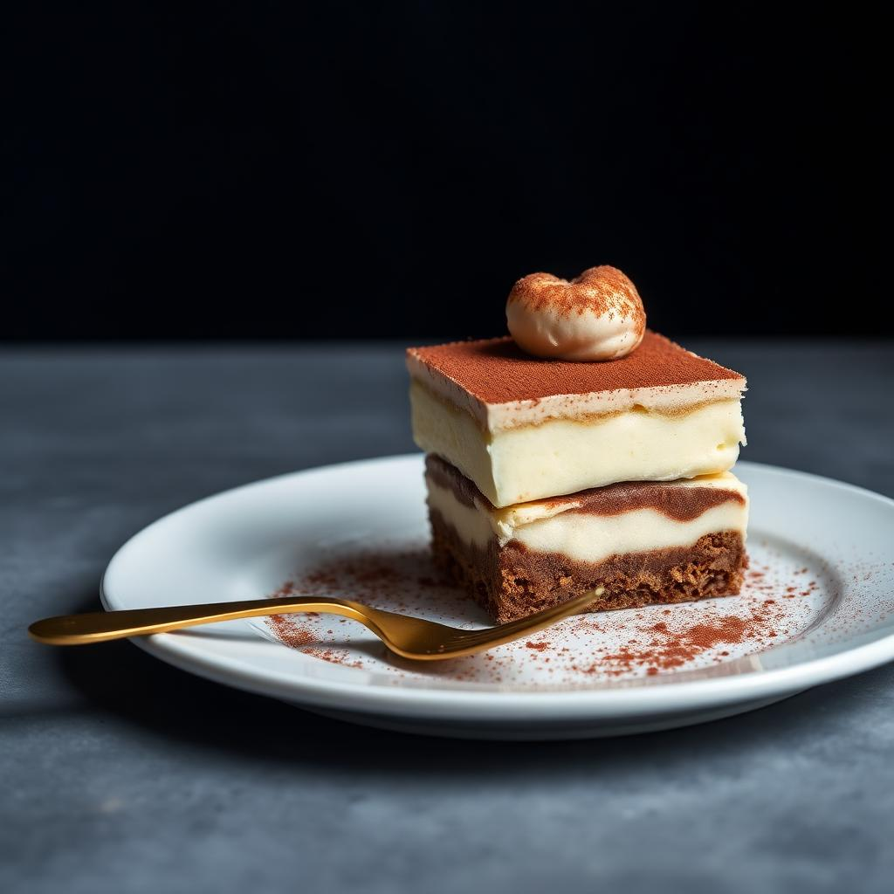
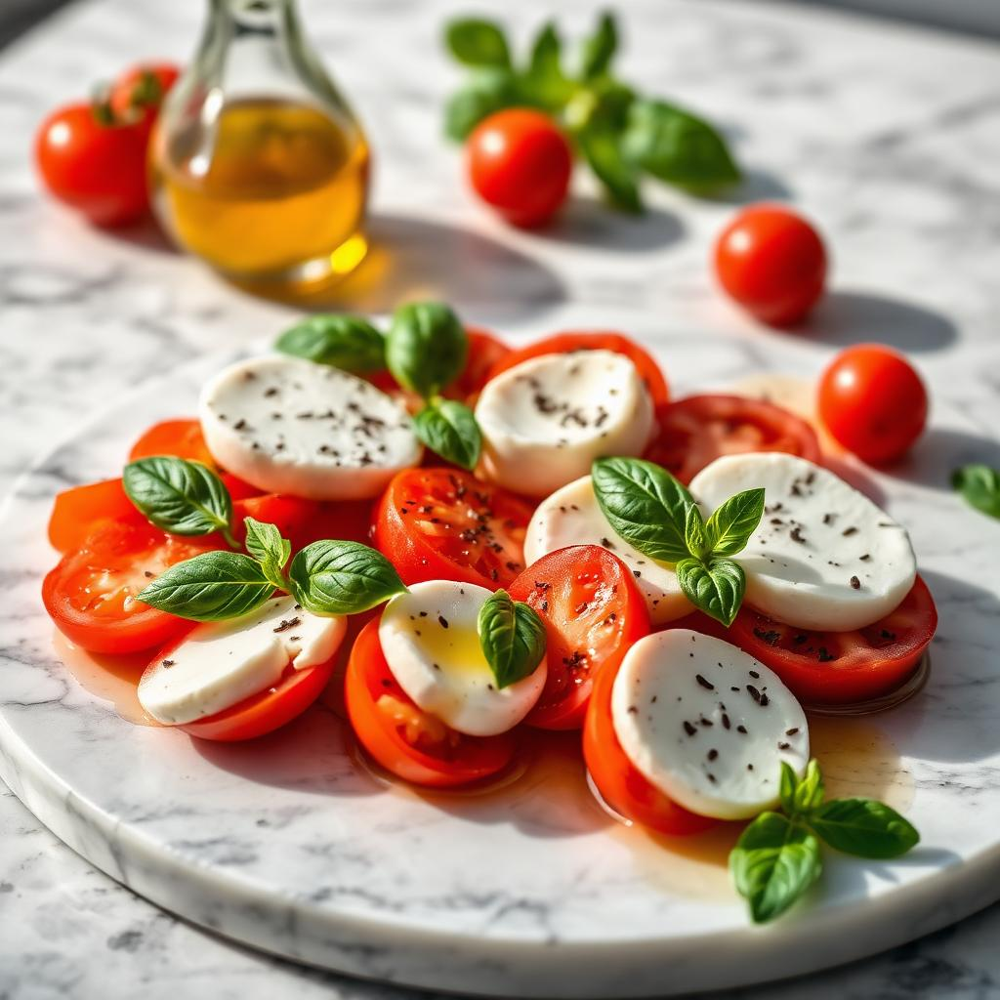
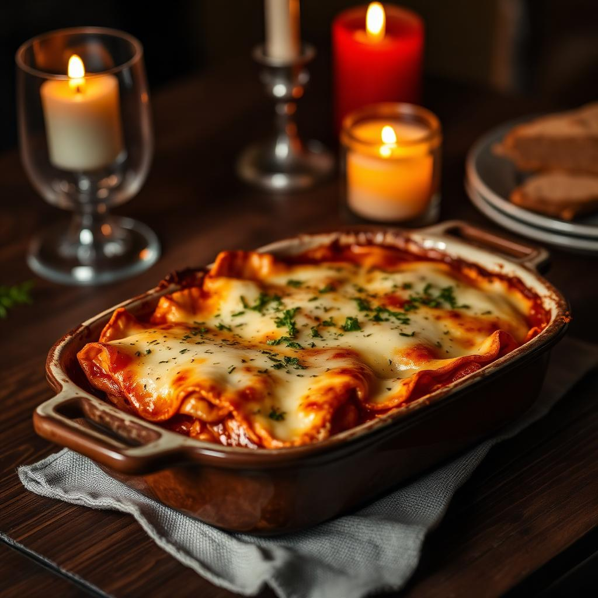
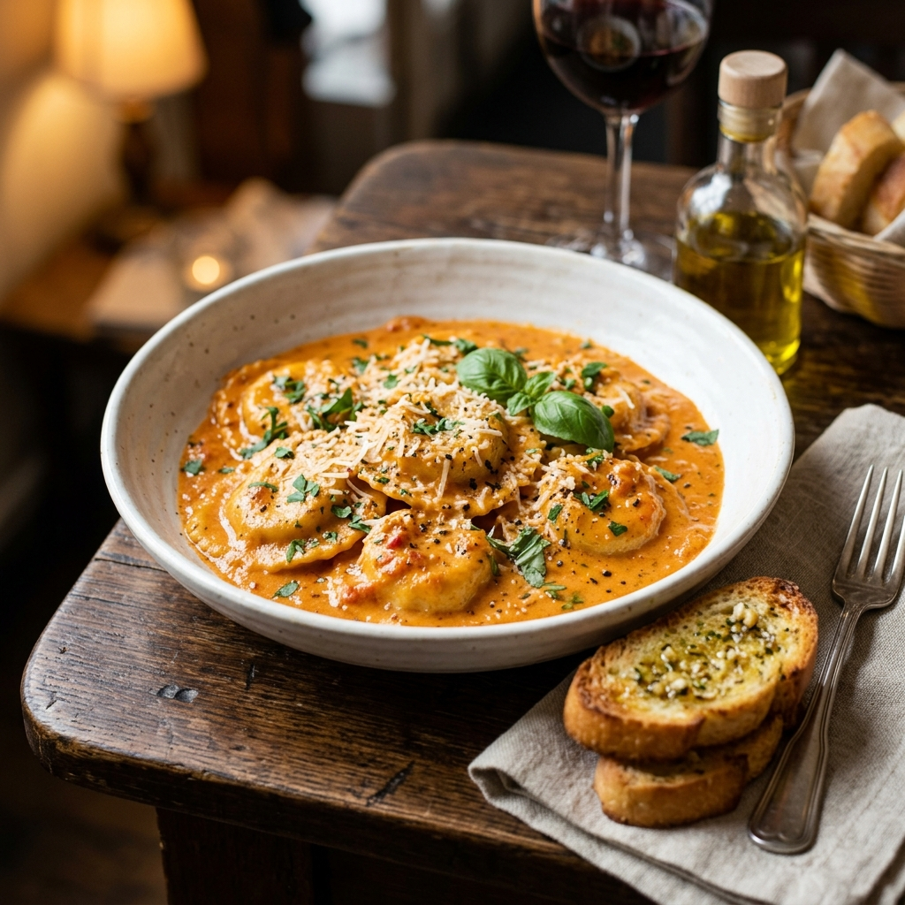
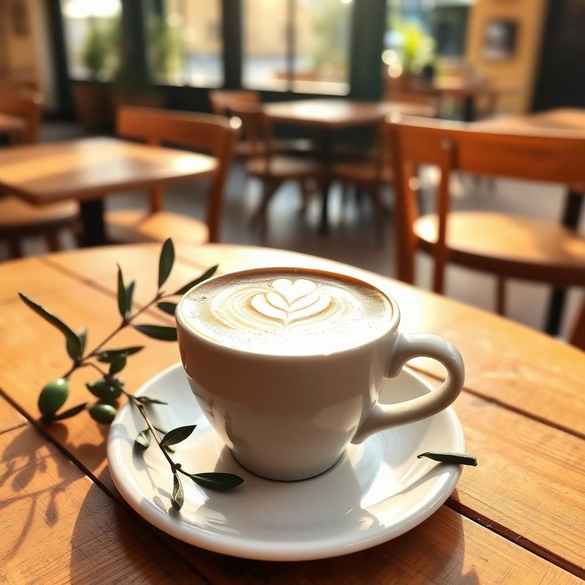

Best SellerToday's Special
Tagliatelle al Tartufo
₹640Hand-rolled tagliatelle finished with truffle cream, aged parmigiano and cracked pepper.
18 min720 kcal Veg
La Carta
Seven categories, one kitchen. Sitting at a table? Scan the QR code to order any of these straight from your phone.
Hand-rolled tagliatelle finished with truffle cream, aged parmigiano and cracked pepper.

Mascarpone cream, espresso-soaked savoiardi, bitter cocoa.

Heirloom tomatoes, imported buffalo mozzarella, torn basil and cold-pressed Ligurian olive oil.
Guanciale, egg yolk, pecorino romano — the Roman classic, no cream.

Twelve layers, slow-braised ragù, béchamel and a golden baked crust.

Handcrafted chicken ravioli in rich tomato-cream sauce with toasted garlic crostini.

72-hour fermented dough, fior di latte, San Marzano and basil. Stone baked.
Gorgonzola, fontina, parmigiano, fior di latte and chestnut honey.

Single-origin espresso, silk-textured milk, cocoa dusting.
Rocket leaves, poached pear, walnuts, shaved parmigiano, honey vinaigrette.
San Marzano tomato, garlic, Calabrian chilli and fresh parsley.
Spinach pasta, roasted vegetables, ricotta and smoked scamorza.
Handcrafted chicken ravioli in rich tomato-cream sauce with toasted garlic crostini.
Vanilla bean panna cotta with wild berry compote.